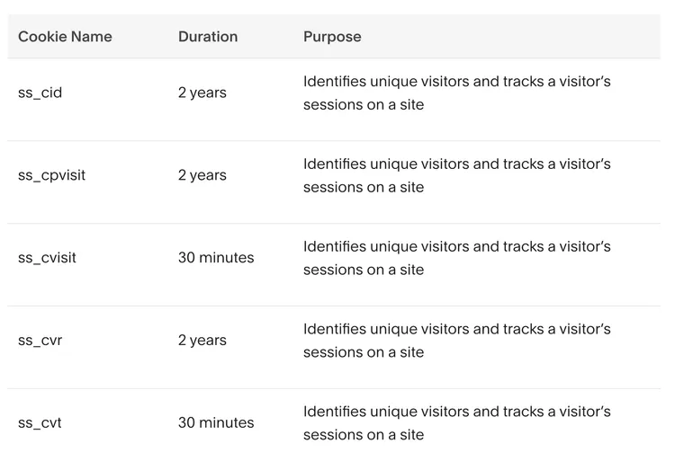
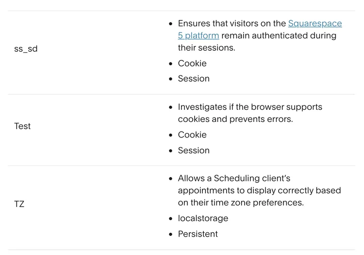
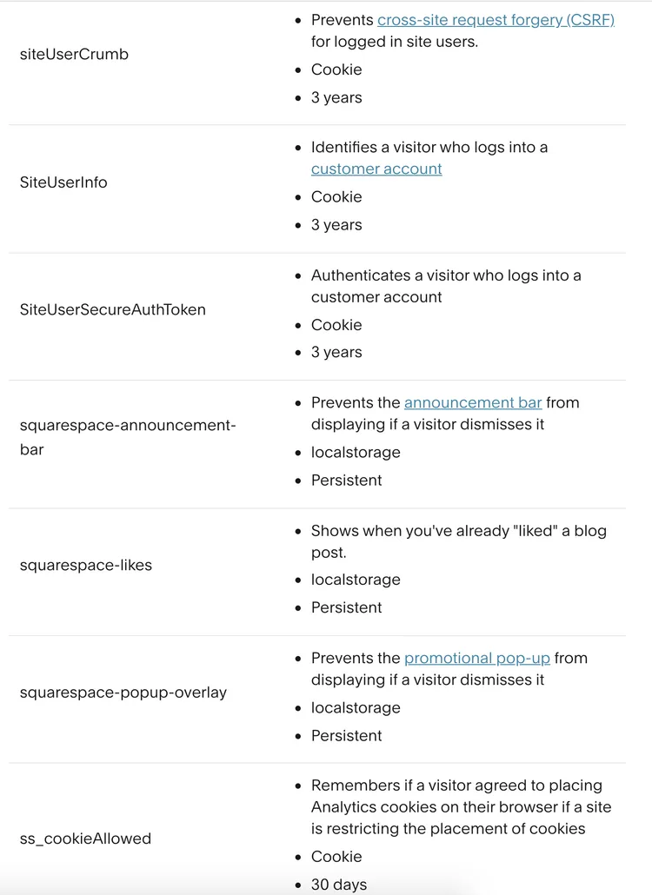
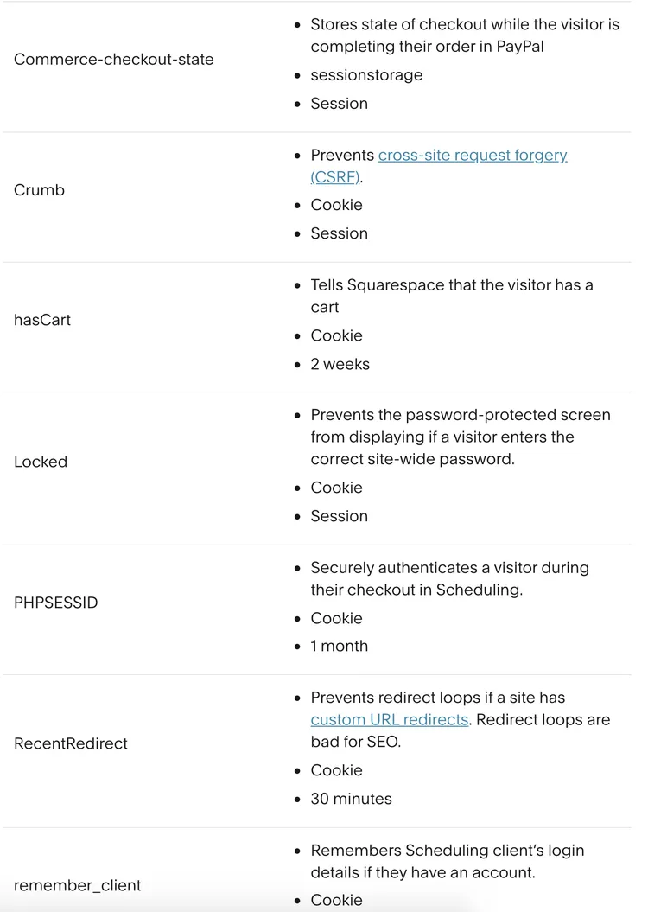
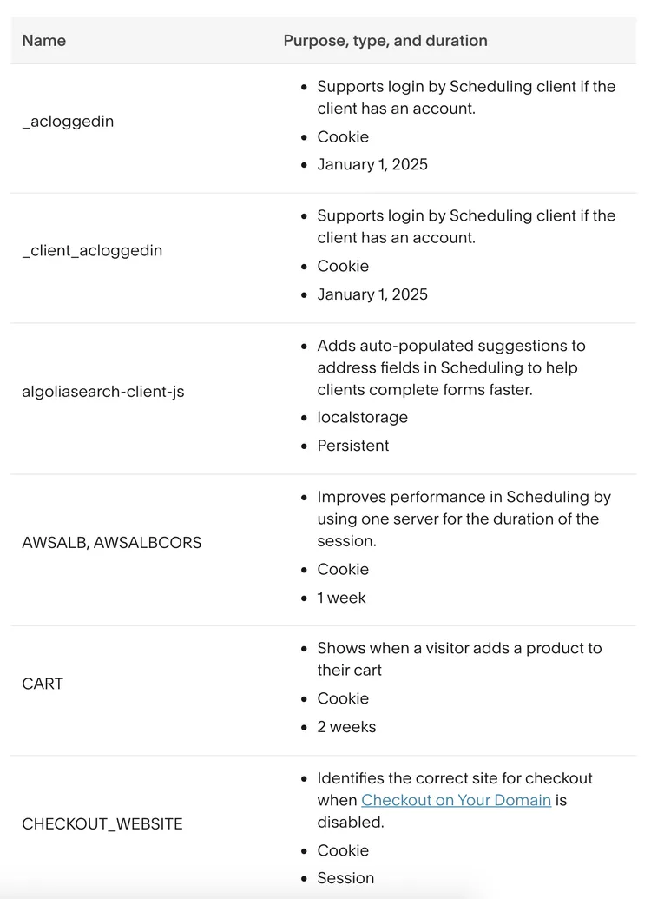

Cookies are small files of text, typically of letters and numbers, which contain information and are downloaded to your computer or mobile device when you visit our website. They do a lot of things including helping us to understand how our website is being used, letting you navigate between pages efficiently, remembering your preferences and generally improving your browsing experience. Cookies can also help us to identify other products and services which are more relevant to you and your interests.
How do we use cookies?
- Strictly necessary cookies: These cookies are essential to enable you to use the website effectively, such as when buying a product and / or service. Without these cookies, the services available to you on our website cannot be provided. These cookies do not gather information about you that could be used for marketing or remembering where you have been on the internet.
- Performance cookies: These cookies enable us to monitor and improve the performance of our website. For example, they allow us to count visits, identify traffic sources and see which parts of the site are most popular.
- Functionality cookies: These cookies allow our website to remember choices you make and provide enhanced features. For instance, we may be able to provide you with news or updates relevant to the services you use. They may also be used to provide services you have requested such as viewing a video or commenting on a blog. The information these cookies collect is usually anonymised.
- Targeting cookies: These cookies record your visit to our website, the pages you have visited and the links you have followed. We will use this information to make our website and the advertising displayed on it more relevant to your interests.
- First and third party cookies: First party cookies are cookies set by our website. Third party cookies are cookies on our website that are set by a website other than our website, such as where we have adverts on our website or use Facebook pixels so that we can show you relevant content from us when you are on Facebook.
You can find more information about the individual cookies we use and the purposes for which we use them in the table below:
Strictly Necessary Cookies
Strictly necessary cookies are vital for our website to function. They enable critical website operations and allow you to move around our site. These essential cookies are always active on our website. All strictly necessary cookies are anonymised.
Web Analytics Cookies
Web Analytics cookies are vital to our business and allow us to monitor website functionality and health. They help us track website use and identify potential issues with the site. All Web Analytics cookies are first-party only in nature, fully aggregated and anonymous. These are defaulted as on, as for the most part they help our website and business function.
Performance Cookies
Performance cookies allow us to collect information around how our website is used so we can measure and improve the performance of our site. They help show us how users move around both individual pages and the website as a whole. All information that these cookies collect is aggregated and anonymous.





Marketing Cookies
Marketing cookies may be set through our site by our advertising partners. They may be used by those companies to build a profile of your interests and show you relevant adverts on other sites. They do not store directly personal information but are based on uniquely identifying your browser and internet device. They also enable us to collect fully aggregated, and therefore anonymised, demographic data on our website users. If you do not allow these cookies, you will experience less targeted advertising.
Current marketing cookies:
_ga This cookie name is associated with Google Universal Analytics - which is a significant update to Google's more commonly used analytics service. This cookie is used to distinguish unique users by assigning a randomly generated number as a client identifier. It is included in each page request in a site and used to calculate visitor, session and campaign data for the sites analytics reports. By default it is set to expire after 2 years.
We continually update our technology so that we can provide you with the most efficient and useful tools. These updates include how we use cookies, placement of new cookies as well as the extension to older cookies to make them more efficient so that we can provide you with a better service. This list may be updated from time to time.
Your Cookie Choices
Using the options above, you can turn cookie categories on or off as you so require. As mentioned above, we need strictly necessary cookies always active in order for the website to function. However, if you wish to remove all the cookies, please review the options settings in your browser.
What happens to Cookies that have been downloaded in the past? You can delete existing cookies from your browser. Otherwise they will remain until they expire. Once you have disabled a cookie, we will stop using it to gather information. However, we may still use information gathered previously when the cookie was active. If you wish to revisit your choices at any time, please use the cookie link in the footer of the main webpage to bring you to the choices screen.